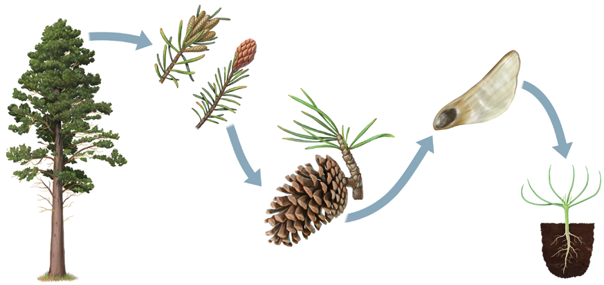
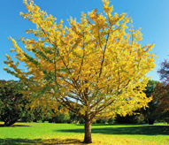
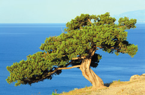
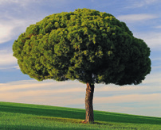
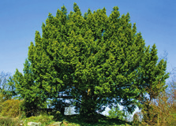
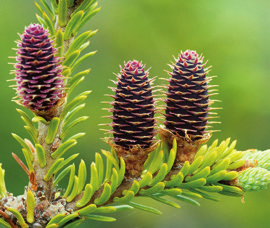

Las gimnospermas son arbustos o árboles que se extienden por todo el planeta, en especial en las zonas más frías. Estos son algunos ejemplos:
Pino
Tejo
Ginkgo biloba
Enebro
Las plantas gimnospermas comparten estos rasgos:
Disponen de semillas que no están encerradas en un fruto.
Sus hojas suelen tener forma de aguja o de escama. La mayoría son de hoja perenne, es decir, presentan hojas durante todo el año, aunque algunas son de hoja caduca, ya que pierden las hojas en la época desfavorable.
Las flores carecen de cáliz y corola, por lo que son poco vistosas. Son unisexuales y pueden estar en ramas diferentes de la misma planta o en plantas distintas. Las flores forman unas agrupaciones características que reciben el nombre de conos.
La reproducción de las gimnospermas
Los granos de polen de las flores masculinas llegan, gracias al viento, a los óvulos, que están al descubierto sobre las escamas del cono femenino, y entonces se produce la fecundación.
A continuación, se originan las semillas, a las que se conoce con el nombre de piñones. El cono femenino cambia de aspecto y ahora recibe el nombre de piña.
Cuando pasa el tiempo necesario, los piñones maduran, la piña se abre y caen al suelo. Si se dan las condiciones adecuadas, estas semillas germinan y producen nuevas plantas.

Ciclo de vida de un pino

Árbol de otoño dorado

Árbol solitario junto al mar

Árbol solitario en una colina

Árbol verde

Conos de un árbol conífero